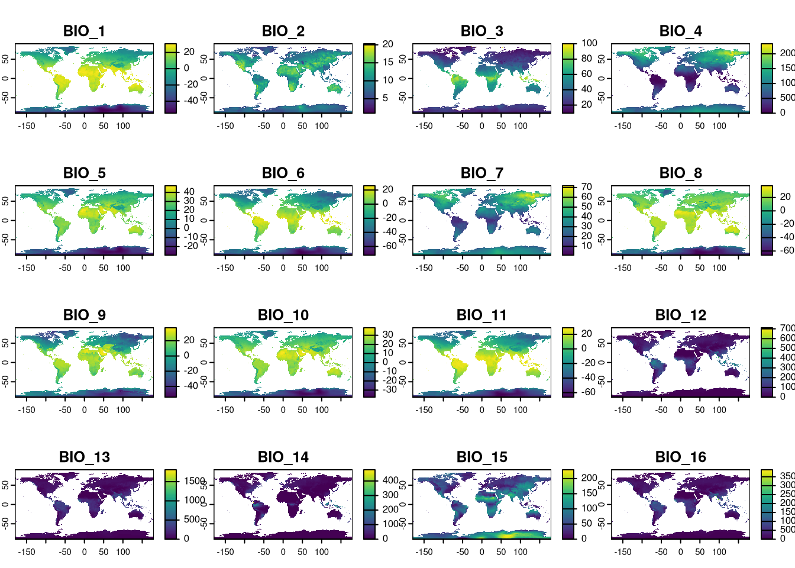
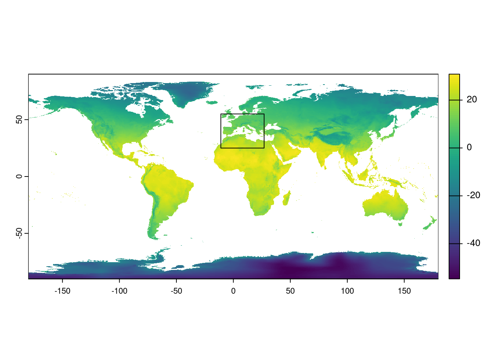
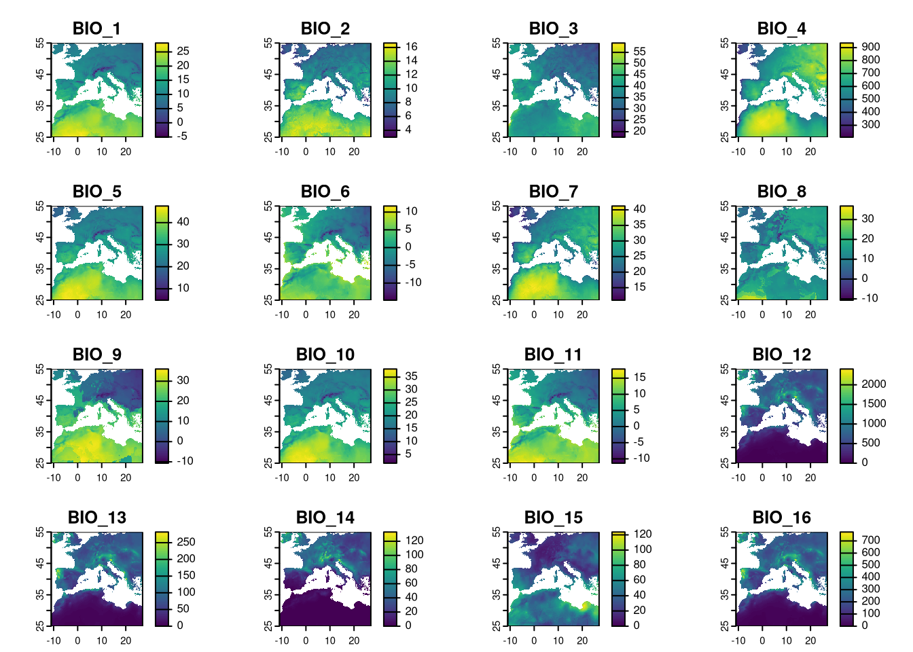
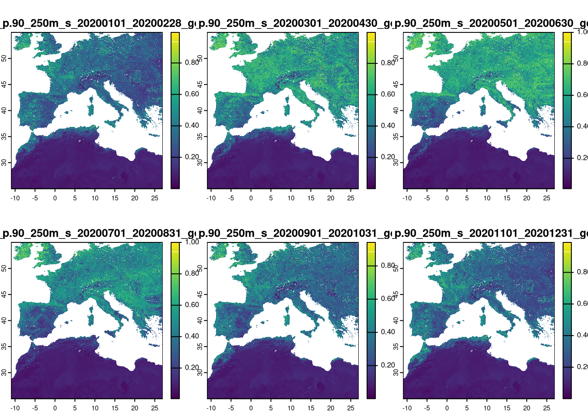
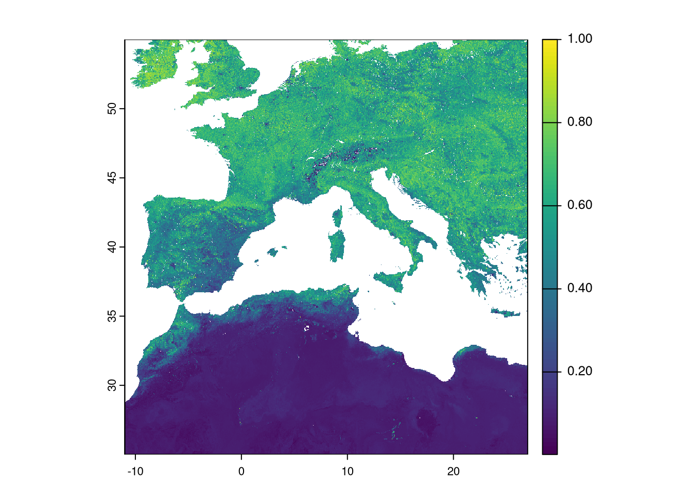
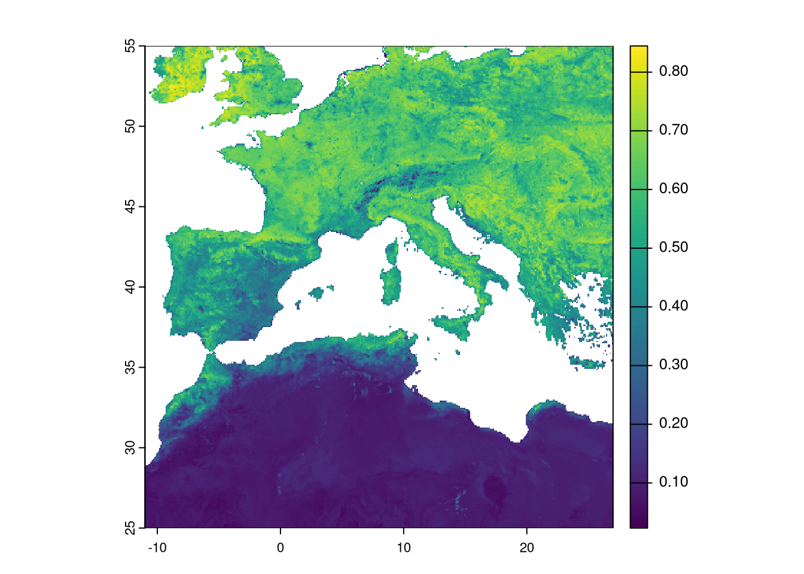
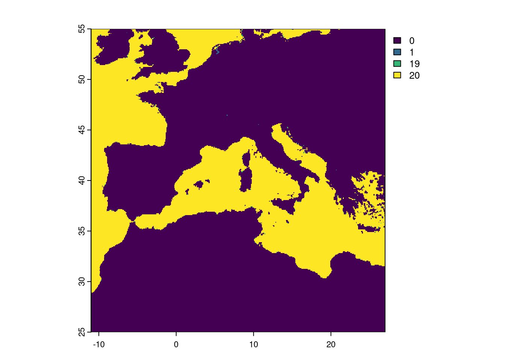
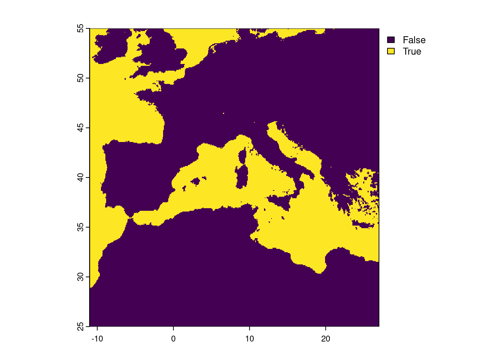

3 Chapter 2 - Processing the raster data
In this chapter, we are going to obtain and process the predictors in the data/raster folder. In the process of building an ecological niche model, we need to select and retrieve variables related to the niche of our species of interest and our specific hypothesis or question. Often, these variables can be found in several public databases (e.g., WorldClim climate, satellite products) or other sources, but they usually require some level of processing. Our goal here is to obtain these variable and perform some GIS raster processing inside R to ensure uniform geographical properties among the raster layers. These steps include:
- Setting the same extent for all layers (aligning the rasters)
- Setting the same resolution (in this case, the study will be performed at a 10km resolution)
- Applying the same No Data mask to all layers
Defining the resolution and extent of the study area requires careful analysis. In this example, we set an extent that covers the combined distribution of the three species. We opt for a 10km resolution because many presence data from national atlases and other sources are available at this resolution. This allows us to use these data in our model (in the previous chapter, we removed points that had an uncertainty higher than 10km). We also choose this resolution for practical reasons. A very high resolution would require much more processing time and storage space, which may not be feasible within the available time to run this example. However, the resolution should always be carefully balanced between data availability (both predictors and presence data), processing limitations, and, most importantly, the requirements of the study system. For example, it might not make sense to study elephant distributions at a very high spatial resolution.
Note that in this chapter we are limiting the training area, i.e., the area where the models will retrieve presence and absence data to calibrate and find the optimal statistical solution. Later, in chapter 5, we will process the variables to focus only on the area of model projections, which is the Iberian Peninsula.
For this chapter, we need to obtain the 19 bioclimatic variables and the EVI variable. All files should be downloaded to data/rasters/original under respestive folders climate and evi*.
The terra library is essential for niche modeling. It provides functionality to handle spatial data such as rasters and vectors, as well as perform geoprocessing. This transforms R into a very competent GIS tool. The library geodata provides access to climate data from WorldClim and other spatial data.
3.1 General layers
Throughout the tutorial, we will define a training area and a projection area for the models. We will explore each in detail later, but here’s a brief overview: the training area is where we gather data to build the models, usually covering the species’ distribution range. The projection area is where we aim to generate model predictions. In this case, the training area includes most of Western and Central Europe and part of North Africa, aligning with our focal species’ distribution. The projection area is the Iberian Peninsula (Portugal and Spain), where we will analyze potential contact zones.
Obtain a vector of country polygons with geodata and save it in the appropriate folder.
Now we use the information of the countries within the layer to get our projection area. Since with want only the continental landmass, we have to separate (disaggregate) the polygons with disagg command and keep the two largest polygons.
3.2 Processing climate layers
First, we are going to obtain the layers from Worldclim through geodata library. These are the 19 bioclimatic variables (see above for details). The function allow us to set a priori the resolution we want (5 arc minutes = 0.083333(3) degrees ~ 10km) and the path where to write them.
The original layer names are lengthy and complex. Since we’ll frequently reference these variables by name throughout the tutorial, we’ll simplify them with easily identifiable names. Given that we’re opening all files sequentially from bio1 to bio19, we can rename the layers accordingly.
## [1] "wc2.1_5m_bio_1" "wc2.1_5m_bio_2" "wc2.1_5m_bio_3" "wc2.1_5m_bio_4"
## [5] "wc2.1_5m_bio_5" "wc2.1_5m_bio_6" "wc2.1_5m_bio_7" "wc2.1_5m_bio_8"
## [9] "wc2.1_5m_bio_9" "wc2.1_5m_bio_10" "wc2.1_5m_bio_11" "wc2.1_5m_bio_12"
## [13] "wc2.1_5m_bio_13" "wc2.1_5m_bio_14" "wc2.1_5m_bio_15" "wc2.1_5m_bio_16"
## [17] "wc2.1_5m_bio_17" "wc2.1_5m_bio_18" "wc2.1_5m_bio_19"
The study area (training area for models) needs to encompass the full distribution of the three species. We could either check the extreme coordinates of the presence data or use coarse distribution polygons (e.g., IUCN distributions) to define the study area. Here, we opt for a simpler approach by defining a rectangle that we know includes the species’ distributions. This rectangle extends from -11.0 to 27.0 degrees longitude and from 25 to 55 degrees latitude.

We can now use the rectangle extent to crop the climate layers.

3.3 Process EVI
The Enhanced Vegetation Index (EVI) indicates land productivity and serves here as a continuous variable, acting as a proxy for habitat. We will use 2020 data available from the OpenGeoHub website, which hosts a variety of free spatial data useful for ecological niche modeling. The EVI data is global with a 250m resolution, resulting in large file sizes. We need to manually download the six files for 2020 and save them in the data/rasters/evi folder. Once processed, these files can be deleted to save space. The links to each file are provided in the table.
After downloading to the correct folder, we can open the rasters in R.
As they are huge files, to avoid processing unneeded areas, we crop to the study area defined above.
## |---------|---------|---------|---------|========================================= 
We need to further summarize the data into a single file by obtaining the maximum EVI value per pixel for the year 2020. We can use the app function from terra, which applies a function to summarize all layers on a pixel-by-pixel basis.
 We still need to change the resolution of the EVI to match the climate data. However, the original resolution of the EVI (0.002245788 degrees) does not allow aggregation by an integer factor. Therefore, we need to use another function to resample the data to a new resolution. By providing the climate raster to this function, it resamples the EVI to match the exact spatial properties of the climate dataset. We use the “average” method to the resampling process, so each group of pixels is summarised by average to the new, larger one.

We can also update the layer name:
## [1] "max"Although it is not mandatory, it is good practice to have the same No Data mask for all variables used in modeling. We need to check the No Data areas of each layer and set them to a common area. The climate layers already share the same No Data mask since they were created using the same process. However, it is not guaranteed that the EVI has the same mask. Here, any pixel set as No Data in a single layer will be set as No Data in all layers.
Let’s extract and check the combination of all No Data masks. The app command applies a function (in this case, the sum function) to all corresponding pixels in all layers. By using is.na(), we get TRUE or FALSE if the pixel is NA or not in each layer. By summing those values, we will know in how many layers that pixel is set to NA.
As expected, the pixel is either set to NA in all 19 layers or it has data in all.
Now we sum the EVI No Data to check if there are other pixels with No Data. If so, we will have to set a common mask for all layers.
Plot the sum of both masks:

Notice that a few pixels have the value of 1. This means that only the EVI had those pixels set as No Data. We need to set a final mask where we detect pixels set to NA in, at least, one layer and apply the mask to all rasters processed.

We have finished the processing of the raster variables. The climate and EVI data sets are now fully aligned and with the same resolution. We just need to save them into different TIF files2.
# Write Rasters to file
# Chelsa is a single file with 19 bands/layers
writeRaster(clim, "data/rasters/climate.tif", overwrite=TRUE)
# EVI is a single file with single band/layer
writeRaster(evi, "data/rasters/evi.tif", overwrite=TRUE)Note that these files a full raster georeferenced images. The images can be visualised as well in any GIS (e.g. QGIS).
We use the “overwrite=TRUE” just in the case some version of the files were already present and to avoid the error↩︎